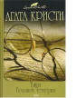

Тайна Большой Четверки

В обоих романах великому сыщику Эркюлю Пуаро придется мобилизовать все свои мыслительные способности, чтобы распутать сложнейшие дела. Развязка романа «Убийство Роджера Экройда» считается одной из самых неожиданных в истории мировой детективной литературы. А в романе «Большая Четверка» сыщику предстоит заняться совсем необычным для себя делом — раскрыть заговор «мировой закулисы».